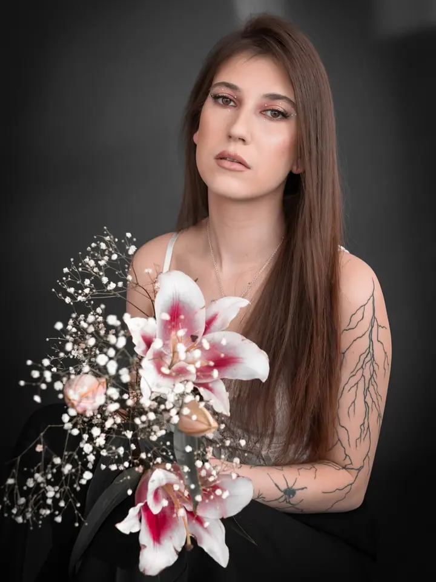
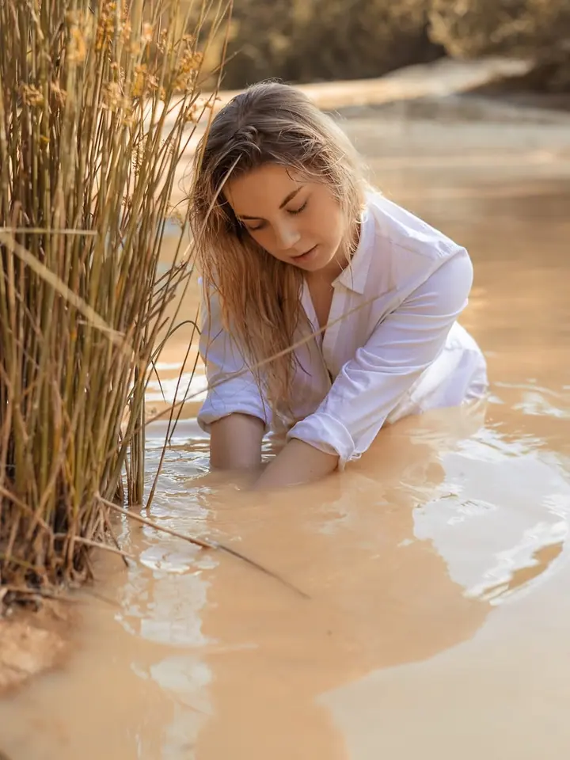

Portréty na míru
Společně najdeme styl, prostředí i atmosféru, které nejlépe vystihnou vaši osobnost. Fotky mohou být přirozené i stylizované, venku v přírodě, při západu slunce nebo v ulicích.

Portrétní a lifestyle fotograf
Jmenuji se Jiří Břicháček a fotím portréty v Brně a po celé jižní Moravě. Každé focení přizpůsobím vám, ať chcete přirozené fotky v přírodě, nebo stylizovaný příběh v kostýmu. Hlavně ať se u toho cítíte dobře.
Zeptat se na termín
Společně najdeme styl, prostředí i atmosféru, které nejlépe vystihnou vaši osobnost. Fotky mohou být přirozené i stylizované, venku v přírodě, při západu slunce nebo v ulicích.
Boudoir, glamour nebo cosplay. Kostým, příběh a prostředí ladíme spolu, aby fotky působily jako z vašeho vlastního světa.
Jsem portrétní a lifestyle fotograf z Brna. Fotím lidi tak, aby se na fotkách poznali, a proto každé focení začíná tím, že si spolu ujasníme styl, prostředí i atmosféru, kterou chcete ukázat.
Nejradši fotím venku, u vody, v lese nebo při západu slunce. Baví mě ale i tematická focení, kde jde o kostým, příběh a detaily: cosplay, glamour nebo boudoir. Zkrátka všechno, co dá prostor vaší osobnosti.
Záleží mi na tom, aby focení probíhalo bez stresu a v přátelské atmosféře. Pokud chcete, přizvu k focení profesionální vizážistku, která vám make-up a vlasy připraví přesně podle stylu fotek.
Napište mi e-mail, co si představujete. Domluvíme se na typu focení, termínu a balíčku, který vám bude sedět.
Společně vybereme místo, oblečení a atmosféru. Když budete chtít, domluvím i vizážistku.
Fotíme bez spěchu a bez stresu. Postupně vás navedu, takže nemusíte mít s focením žádné zkušenosti.
Fotky vám pošlu do online galerie, vyberete si ty nejoblíbenější a já je pro vás pečlivě upravím.
Balíček Basic (30 minut, 5 upravených fotek) stojí 1 300 Kč, Standart (1 hodina, 8 fotek) 1 800 Kč a Premium (2 hodiny, 12 fotek, dvě lokace) 2 500 Kč. Rodinné focení s 10 upravenými fotkami vyjde na 2 000 Kč.
Ano, každá další upravená fotka stojí 150 Kč. Vybíráte si je pohodlně v online galerii.
V ceně je příprava, samotné focení a úprava fotek. Pronájem prostor, služby vizážistky a doprava nad rámec se platí zvlášť, doprava za 8 Kč/km.
Určitě. Focení je v přátelské atmosféře a celou dobu vás budu navádět, jak se postavit a kam se dívat.